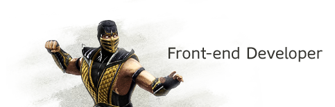

Front-end developer, 3+

So What is This About?
Есть какие-то олимпиады, или университетские конференции, но это же все не то. Нужен такой чемпионат, где молодые разработчики будут проявлять свои таланты не профессорам с кафедры, а крутым айтишным компаниям, где начинающий девелопер сможет перенять опыт у более продвинутого, поймет куда ему нужно расти и развиваться, а солидные разработчики смогут наладить новые полезные контакты и получить свежие идеи.
Собственно с этого и родился Ukrainian Web Challenge.Номинации
- frontend developer
- backend developer
- архитектор систем
- web дизайнер
- тестировщик